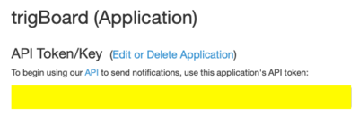

Supported Services¶
Where the notifications are sent - the Configurator Tool is used to enable and “configure” any of these. If the notification needs to just go straight to your smart phone, then Pushsafer or Pushover would be a good start. For more advanced users, UDP or MQTT can be used, but these require a central gateway (rapsberry Pi or host AP)
Pushsafer¶

Pushsafer Setup
Go to Pushsafer.com and create an account - you’ll need to download/install the app as well
Copy the private key:

Paste that in the Configurator:
Pushover¶

Pushover Setup
Go to pushover.net and create and account - you’ll need to download/install the app as well
You should see your private user key:
Scroll down and create a new application:

Can leave things the way they are - name whatever you want:

Then you should see the API Token:
Paste both of those into the Configurator:
IFTTT¶

IFTTT Setup
Go to IFTTT.com which stands for “IF This Then That” and is a very powerful integration service that allows an event from the trigBoard to connect to other IoT services, like send an email, text, update a google spreadsheet, turn lights on/off, etc… It requires a maker key in order to work, so first sign up or sign in using whatever option you want to use. I use google to login.
Search for webhooks, then click services:
Just click on the webhooks service, click connect, and should be good to go. You should then see a “documentation” button:
Here you will see the maker key:

Then it’s pretty easy to setup the IF this then That recipe. Just use the web hook for the IF event, where the Event Name is what is given as the trigBoard name in the configurator (no spaces), then the Value 1 is the name, Value 2 is the message.
Paste that maker key into the configurator:
UDP¶
More for the advanced user, but if you’re looking to take this to the next level, UDP messaging allows for a tight and fast network for getting the notifications out. Basically, a central gateway would be setup acting as a UDP server, where all of the trigBoards communicate back to. This is great for building a secure standalone trigBoard network that’s battery backed and could also allow for a cellular connection.
MQTT¶
Similar to UDP, but if you’re using the raspberry pi or something to run your home automation system, and it’s all based on MQTT messaging, then this will work great for that. This was added in at the request of support for Home Assistant (not tested though)